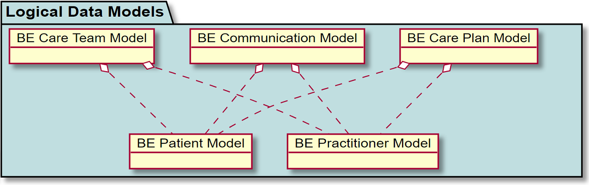
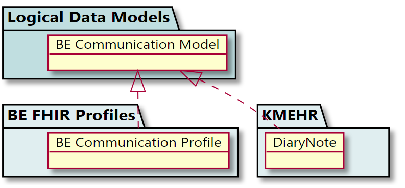
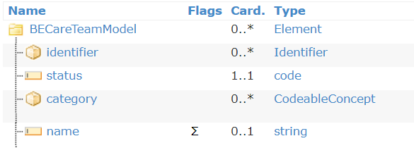

FHIR Belgium Base IG
0.1.0 -
FHIR Belgium Base IG
0.1.0 -
FHIR Belgium Base IG - Local Development build (v0.1.0). See the Directory of published versions
Logical Data Models Overview
Logical Data Models are intended for non-technical users to express and validate the functional requirements for exchange of information, from a functional or clinical perspective.
Logical Data Models represent an abstract data model, independently of FHIR resources or datatypes or any technical implementation. They are building blocks that can be reused and across other models. For example models like Patient or Practitioner can be reused in a series of more complex models:
|  |
Because they are decoupled from any technical implementation, Logical Data Models constitute a foundational aspect of the interoperability design, by supporting a stable, common understanding of the interoperability data needs.
The Logical Data Models are mapped to the corresponding FHIR implementations. They can also be mapped to KMEHR or CDA implementations, which allows for a pathway for migration and legacy support.
|  |
Logical Data Model are situated in the Zachman framework at the System level and are part of the Data Architecture (in TOGAF).
It is possible to express also conceptual data models (which are similar to the Dutch ZIBs) - therefore on the Business level. The key difference between Logical and Conceptual data models is that the Conceptual Data Model focuses on the relations and definitions, while the Logical Data Model expresses more details about supported relations, optionality, cardinality, data types, referential integrity, etc. In short, Conceptual Data Models express what the information means, while Logical Data Models provide more details on how the information is materialized.
The Logical Data Models can be represented in several forms - UML being the standard language for representation. In this Implementation Guide, the use of Logical Data Models is more importantly focused on how they are stored. By storing Logical Data Models as FHIR artefacts, which are computable artefacts, we enable the following possibilities:
Data Classification
Assisted or automated mapping between data elements
The Logical Data Models may rely on the existing FHIR data types. This is just an option and is not mandatory. It has been the approach taken in several cases, one primary reason being that doing this allows to complement the initial modelling and analysis in international best practices.
Many of the data elements that contain text can have multiple language representations. This is obvious for example for reference data that has several display values in different languages, but also in other data elements such as “Street name”. When a Logical Data Model expresses a data element as being a String with cardinality 1, this means that the data element is one, but it may have different representations in different languages. In the example below, of a Care Team having a name (0..1), this does not mean that the team it will have only one expression of the name - it rather means that the team has one name, and the translations and language representations of that name are left to the implementation layer.
|  |
The following Logical Data Models are defined in this specification:
Patient
Practitioner
PractitionerRole
Communication
Allergy Intolerance
Care Team
Care Plan
Immunization Record
IG © 2020 HL7 Belgium. Package hl7.be.core#0.1.0 based on FHIR 4.0.1. Generated 2020-02-27
Links: Table of Contents |
QA Report |
Version History  |
|
 |
Propose a change
|
Propose a change